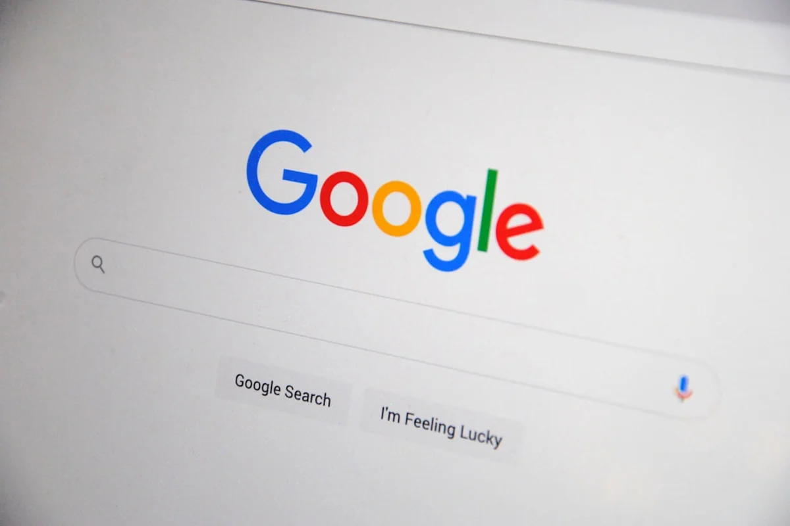

Introduction
Something seismic happened at Google I/O on May 20, 2026. The search box that has anchored the open web for more than a quarter century was officially declared obsolete, replaced by an AI-driven conversational interface powered by Gemini 3.5 Flash. For content creators trying to understand Google AI Mode content creators 2026, the mood online shifted almost immediately from curiosity to quiet panic.
Bloggers, independent publishers, and freelance writers began sharing traffic screenshots that looked like cliff edges. The concern is legitimate. When Google's AI answers a question directly inside the search results, the incentive for a user to click through to any external page drops dramatically. The platforms that built entire business models around organic search traffic are now staring at a structural problem, not a temporary dip.
But here is the part that rarely gets said clearly: this is not the first time the web has declared itself dead. The shift from desktop to mobile was supposed to kill blogs. Social media algorithms were supposed to make SEO irrelevant. Voice search was going to end typed queries. Each wave reshuffled the deck rather than burning it. The creators who understood the new rules early came out stronger. The same opportunity exists right now, in May 2026, if you move fast enough.
This guide is written for anyone whose livelihood depends on being found online: travel bloggers, food writers, culture journalists, independent researchers, and anyone running a content-driven website. It covers what Google's AI Mode actually does, why some content will still be cited and other content will vanish entirely, and the concrete steps worth taking this week.
What Google Actually Announced at I/O 2026
The Google I/O 2026 keynote described the changes as the most substantial upgrade to search in more than 25 years. The core announcement: the traditional ten-blue-links search results page is being replaced, or at minimum deeply subordinated, by an AI Mode that generates a conversational answer at the top of every query. This AI layer is now powered by Gemini 3.5 Flash, which Google integrated as the default model alongside the May 21 core algorithm update.
The practical effect is a layered results page where the AI answer occupies the most visible real estate. Below it, traditional organic links still exist, but user attention data has consistently shown that most clicks happen at the top of the page. When the top of the page is now a self-contained AI response, the click-through rate for everything below it compresses significantly.
What is especially important to understand is that the AI Mode does not generate its answers from nothing. It pulls from indexed web content, synthesises it, and in many cases attributes the source with a small citation link. This is the mechanism that content creators need to understand and target. The question is no longer just "how do I rank number one" but "how do I become the source an AI model trusts enough to cite."
Google has also confirmed that AI Mode is rolling out globally across all major markets simultaneously, not in a slow regional test as previous features were. The May 2026 core update accompanying the launch means sites are already being re-evaluated under new criteria right now.
Why Most Content Will Not Survive This Transition
The uncomfortable truth is that a significant portion of what currently exists on the web was written to rank, not to genuinely inform. Content farms, thin affiliate pages, listicles that restate Wikipedia in worse prose, and "best of" posts that exist purely to funnel affiliate clicks are structurally incompatible with how AI models select sources to cite.
AI language models, including the Gemini architecture, are trained to favour content that demonstrates expertise, specificity, and originality. They surface sources that contain data, first-hand accounts, named experts, and verifiable claims. Generic content that could have been written by anyone about anywhere is essentially invisible to these systems, because it adds nothing to the model's ability to give an accurate, useful answer.
Here is a concrete example relevant to food and travel writing. A post titled "10 Best Restaurants in Barcelona" with vague descriptions copied from TripAdvisor reviews will not be cited. A post that includes the specific name of the chef at Bar Cañete, the price of the menú del día in spring 2026, the exact neighbourhood, and a direct quote from someone who ate there last week: that post has a real chance of being pulled into an AI answer.
The underlying logic is the same as academic citation. You cite the source that knows the most, or the source that was there. AI models, increasingly, operate by similar principles.

The Insider Angle: AI Mode Prefers Living Content Over Evergreen Pages
This is the part that almost no competitor coverage is saying clearly, and it matters enormously for independent creators.
Google's AI Mode, particularly with Gemini 3.5 Flash as the backend, has a strong recency weighting. When the AI generates an answer that touches on a topic where conditions change (restaurant hours, prices, travel regulations, menu items, event schedules), it is designed to prioritise sources that are demonstrably recent. A post published or substantially updated in the last 90 days will outcompete a technically superior post that has not been touched in two years.
This is a structural inversion from classic SEO logic. In the old model, a well-linked evergreen post would compound authority over years and sit at the top of results almost indefinitely. In AI Mode, a five-year-old post with 200 backlinks may lose a citation slot to a three-week-old post with zero backlinks but a clearly marked publication date, a recent byline, and a specific current price or opening hour.
The practical implication: content creators who publish less but update consistently will outperform creators who publish constantly but abandon their archives. A post about the best vermouth bars in the Gràcia neighbourhood that was published in 2021 and last updated this month is far more valuable than it was before AI Mode. Build a regular schedule to revisit and refresh your best-performing pages, even if the core argument has not changed.
Add a visible "last updated" timestamp to every post. Use schema markup that signals the modification date. These are not cosmetic choices anymore; they are signals that feed directly into how AI models evaluate source trustworthiness.
Concrete Steps to Get Cited in Google AI Answers
There is no single formula, but the following practices are consistently present in content that earns citations inside AI-generated answers. These are drawn from analysis of which pages appear as sources inside AI Mode during the first weeks of the rollout.
- Use structured, specific data in every post. Prices, distances, opening hours, quantities, dates. An AI model can extract and surface a specific claim like "the tasting menu costs €85 per person as of May 2026" far more easily than a vague sentence like "prices are reasonable for the quality."
- Name your primary source explicitly. If you spoke to the chef, name the chef. If you visited on a specific date, say so. First-hand attribution is a signal of originality that AI models are designed to weight heavily.
- Add an author bio with verifiable credentials. Google's E-E-A-T guidelines (Experience, Expertise, Authoritativeness, Trustworthiness) now directly inform Gemini's citation selection. An author bio that explains why this person knows what they are talking about improves citation probability.
- Use clear question-and-answer structure within body text. Not just in FAQs. Write a section heading as a question that a real person would type into a search bar, then answer it immediately and specifically in the first two sentences of that section.
- Implement Article schema and FAQ schema markup. These tell the crawler exactly where the authoritative information lives on your page. Google's documentation on structured data for articles remains the definitive reference.
- Keep paragraphs short and claims self-contained. AI models parse content in chunks. A long, meandering paragraph is harder to cite than a clean two-sentence claim that stands on its own.
None of these steps require expensive tools or technical expertise beyond basic familiarity with your CMS. They are editorial decisions, which means they are immediately within reach of any independent creator who takes the time to apply them.
What This Means for Travel and Food Bloggers Specifically
Travel and food content has a structural advantage in the AI Mode era that is worth naming directly. These categories are intensely local, experience-driven, and time-sensitive. All three of those qualities are exactly what AI models struggle to fabricate and therefore actively seek from human sources.
A general article about "how to make pasta" can be answered almost entirely from training data. But "where to eat Sunday brunch in the Born district of Barcelona in summer 2026 with a budget under €20" requires current, local, first-hand knowledge. That is a query where an AI model will reach for a human source, and that source could be your post.
The opportunity is sharpest in hyperlocal content. Think neighbourhood-level rather than city-level, seasonal rather than eternal, specific occasion rather than general category. A post about the best terrace bars in Poblenou for a summer evening in 2026 is more citable than a post about the best bars in Barcelona in general.
For food writers, including prices, dish names, current chef, and recent visit dates is now essential rather than optional. A review of El Xampanyet that mentions the house cava costs €2.50 a glass in May 2026 is infinitely more useful to an AI model constructing an answer than a review that calls the prices "very affordable."
For travel bloggers, practical data matters more than ever: visa requirements with current dates, train journey times, entrance fees with the year attached, neighbourhood safety assessments from recent visits. These are the signals that get you cited.
Should Content Creators Diversify Away From Google Entirely?
This question is legitimate and deserves a straight answer rather than a hedge.
Yes, diversification is wise. It was wise before AI Mode and it is wiser now. But the answer is not to abandon Google search as a channel; it is to stop treating it as the only channel. The creators who are most exposed right now are those who built 90 percent of their traffic from organic search and invested nothing in alternatives.
The channels worth building seriously in parallel:
- Email newsletters. A subscriber list is the only audience a creator actually owns. Platforms change their algorithms; email addresses stay. Beehiiv and Substack have both grown significantly as creators rethink their dependency on search traffic.
- YouTube and video search. Google owns YouTube, and video content is not being replaced by AI summaries in the same way text is. A companion video for a major blog post extends reach into a channel that still rewards the traditional click.
- Partnerships and syndication. When your original content is republished or referenced by larger editorial outlets, it earns the kind of domain authority and citation history that AI models treat as trust signals.
- Community platforms. Reddit content is indexed and frequently cited by AI Mode because it contains authentic human experience. Participating genuinely in relevant subreddits can bring visibility that translates back to your own site.
The deeper point is this: the shift to AI Mode does not devalue great content. It devalues content that was manufactured purely for algorithmic ranking. If the reason your content exists is to genuinely help a specific reader solve a specific problem, the underlying value has not changed. The distribution mechanism has, and that requires adaptation, not abandonment.
Final Thoughts
Google's AI Mode is not a future threat; it is a current reality as of May 2026, and the gap between creators who adapt and those who wait is widening every week. The algorithm change that accompanied the I/O announcement means sites are already being re-evaluated right now, under criteria that reward specificity, recency, first-hand expertise, and structured data.
For independent creators in travel, food, and culture, this is genuinely a moment of competitive advantage if approached correctly. The large content farms that flood search results with thin, generic posts are far less able to pivot quickly than a single dedicated creator who knows their subject deeply and can update a post this afternoon with a current price, a named source, and a fresh date stamp.
Start with your ten best-performing posts. Update them this week with specific current data, a visible timestamp, and a clear author attribution. Add FAQ schema to at least three of them. Then write one genuinely original, hyperlocal piece on something only you know, with names, prices, and dates. That is not a radical overhaul; it is an afternoon of work that positions those posts for AI citation rather than just algorithmic ranking.
If this article helped you think more clearly about the shift, share it with another creator who is currently worried.
Frequently Asked Questions
What is Google AI Mode and how does it affect content creators in 2026?
Google AI Mode is the new default search experience announced at Google I/O in May 2026. Instead of showing a traditional list of links, it generates a conversational AI answer at the top of the results page using Gemini 3.5 Flash. For content creators, this reduces click-through traffic from users who previously would have visited an external website to find an answer. However, the AI still cites sources within its answers, so creators who structure their content to be trustworthy and specific can still earn visibility and referral traffic through those citation links.
How do I get my blog cited in Google AI Mode answers?
To get cited in Google AI Mode answers, focus on specificity over generality: include real prices, dates, named sources, and first-hand observations. Use structured data markup such as Article schema and FAQ schema so Google can parse your content accurately. Keep your posts updated regularly, since Gemini 3.5 Flash weights recency heavily for topics where conditions change. Write section headings as specific questions and answer them immediately and clearly. An expert author bio that explains your direct experience with the subject also improves citation probability.
Is Google AI Mode bad for travel and food bloggers?
Not necessarily. Travel and food content is inherently local, experience-based, and time-sensitive, which are exactly the qualities that AI models struggle to produce from training data alone. A post with a specific restaurant name, a current menu price, a recent visit date, and a named chef is far more likely to be cited by an AI generating a local recommendation than a generic listicle. Bloggers who write at a hyperlocal level with genuine first-hand detail are better positioned in the AI Mode era than those who write broad, keyword-stuffed content.
When did Google roll out AI Mode in 2026?
Google announced the AI Mode overhaul at Google I/O on May 20, 2026, describing it as the biggest change to search in more than 25 years. The accompanying May 2026 core algorithm update began rolling out on May 21, 2026, and integrated Gemini 3.5 Flash as the default AI model for the new search experience. The rollout was described as global rather than a limited regional test.
Should bloggers stop relying on Google search traffic in 2026?
Bloggers should diversify their traffic sources, but not abandon Google entirely. The practical advice is to stop treating Google as the only channel. Building an email newsletter, growing a YouTube presence, participating in syndication partnerships, and engaging authentically on platforms like Reddit all provide traffic that is not dependent on any single algorithm change. At the same time, adapting content to earn AI Mode citations rather than waiting for traditional ranking is the smartest way to preserve Google as a meaningful channel.